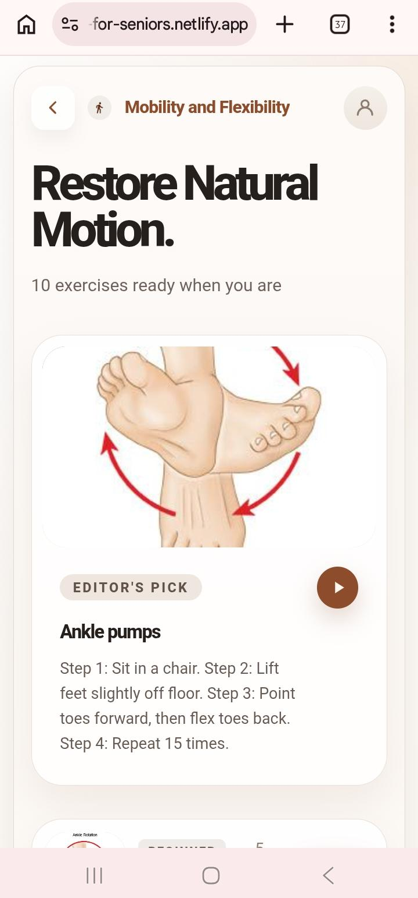

Digital literacy gap
Many traditional fitness apps require navigation patterns and interaction skills that can be difficult for seniors.
Wellora Case Study
Wellora is a Progressive Web Application designed to close a critical gap in senior health technology. It combines voice-controlled navigation, AI-powered personalization, and accessibility-first design so adults aged 65+ can manage wellness more safely and independently.
The product focuses on guided exercise, mood and energy check-ins, AI journal summaries, weather-aware reminders, caregiver reporting, and offline access through an installable web app.

Problem Statement
Many traditional fitness apps require navigation patterns and interaction skills that can be difficult for seniors.
Manual controls can be hard for users with arthritis, tremors, limited dexterity, or vision challenges.
Older adults need clear warnings, low-impact options, seated alternatives, and exercises matched to their ability.
Family members and providers often lack a simple way to monitor progress, mood trends, and consistency.
Solution
Web Speech API recognition and synthesis support hands-free commands like "Go home," "Show balance exercises," and "Open progress."
90 exercises across 9 categories, with seated workout toggles, low-impact options, duration controls, and warnings such as "Stop if dizzy."
Emoji check-ins adapt recommendations based on mood, energy, prior feedback, fitness level, and the user's selected wellness goal.
Users can speak or type reflections after a session, then receive warm weekly summaries generated through OpenAI GPT-3.5.
Open-Meteo weather data personalizes reminder messages, while service worker notifications can nudge users even when the app is closed.
Weekly PDF exports include exercise history, mood trends, journal highlights, and progress metrics for families or healthcare providers.
User Workflow
After a recent fall, Margaret says "Go home," checks in as tired, and receives a gentle seated balance recommendation for 5 minutes.
The voice coach reads instructions aloud, safety warnings stay visible, and Margaret can complete the flow without relying on small controls.
She records "Felt good, no pain today," and the app saves the journal entry, mood, and completion history.
Wellora generates an encouraging AI summary and a caregiver report showing completed sessions and improving mood trends.
Technical Architecture
| Component | Technology | Purpose |
|---|---|---|
| Frontend | HTML5, CSS3, Vanilla JavaScript | Lightweight, fast, minimal dependencies |
| Backend and Auth | Supabase PostgreSQL | Authentication, persistence, and row-level security |
| AI | OpenAI GPT-3.5 | Journal summarization and sentiment-aware weekly feedback |
| Voice | Web Speech API | Voice recognition and text-to-speech coaching |
| Weather | Open-Meteo API | Contextual reminders based on local conditions |
| Deployment | Netlify and GitHub | Serverless functions, hosting, and CI/CD |
| PWA | Manifest and Service Worker | Installable app behavior and offline access |
Privacy and Accessibility
All primary navigation is available through voice commands, with visible feedback during recognition.
Large text options, high contrast colors, semantic HTML, keyboard navigation, and 48px minimum touch targets support senior users.
Supabase RLS keeps journal entries scoped to the authenticated user, with encrypted HTTPS transport.
The app avoids third-party advertising cookies and gives users control over data deletion and journal download.
MVP Scope
Across balance, flexibility, weight control, sleep, energy, cognitive function, and more.
Hands-free navigation, exercise selection, completion logging, and text-to-speech coaching.
Weekly reflections use a warm tone while avoiding medical advice.
Cached exercises and local journal data keep core flows usable without internet.
Shareable PDF reports help families and providers understand progress.
Core features are available at no cost, with future premium and B2B paths possible.
Roadmap
Voice navigation, 90 exercises, mood check-ins, journaling, PWA capability, reminders, and caregiver PDF export are live.
User testing with 20+ seniors, WCAG 2.1 AAA audit, provider integration exploration, and mobile wrapping with Capacitor.
Premium subscription, wearable integration, multilingual support, and senior living partnerships.
Enterprise deployments, insurance partnerships, EHR integration, and clinical validation studies.
Project References
I build websites, web apps, and AI-powered product experiences that are clear, credible, and ready to impress clients, users, or hiring teams.
Start a conversation